Scene 1Warm-Up
▶ Start hereHow your Wonder Films lessons work1-minute videoOpen ▾
🎯 TodayI can…
- explain that plants reproduce by making new plants of the same kind.
- describe how pollination, seeds, and spores are different ways plants reproduce.
- identify evidence that plants reproduce in more than one way.

🔎 Mystery specimenWhat is this fluffy white ball?
What to do: Press Inspect specimen. Move the magnifying lens over the plant, then tap 3 things you notice.
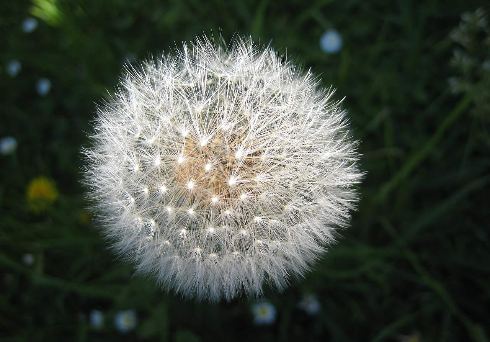
📚 Word WallWords scientists use
What to do: Tap or click each card to flip it and read what the word means. Tap 🔊 to hear the word.
Scene 2The Lesson
🌱 Part 1Plants Need to Make New Plants
When a plant reproduces, it makes new plants just like itself. Without reproduction, plants would eventually disappear.
Some plants reproduce using seeds. Others, like ferns and mosses, reproduce using spores. Both are ways of starting a new life.
🎞️ Put the scenes in orderHow does an apple blossom become an apple full of seeds?
What to do: Drag each photo into the film strip, from first to last. You can also tap a photo, then tap a frame. Get the order right and your strip becomes a movie.
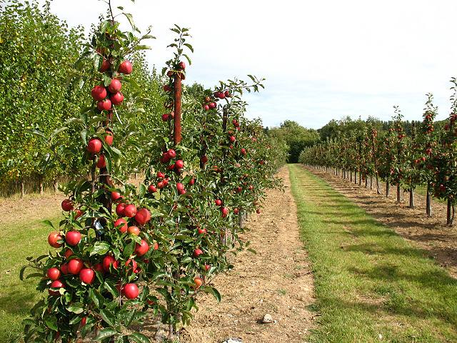
Why does a bee visit an apple blossom?
🐝 Part 2Flowers, Pollen, and Pollinators
Many plants grow flowers. Flowers make a powdery material called pollen. For seeds to form, pollen has to travel from one flower to another. That is pollination.
Wind can carry pollen, but animals do most of the work. Bees, butterflies, and hummingbirds are pollinators. They pick up pollen while they feed, then drop it off at the next flower.
🌬️ The Wind or Water LabDoes a seed's shape match the way it travels?
What to do: Follow the steps one at a time. You will pick, test, and then explain.
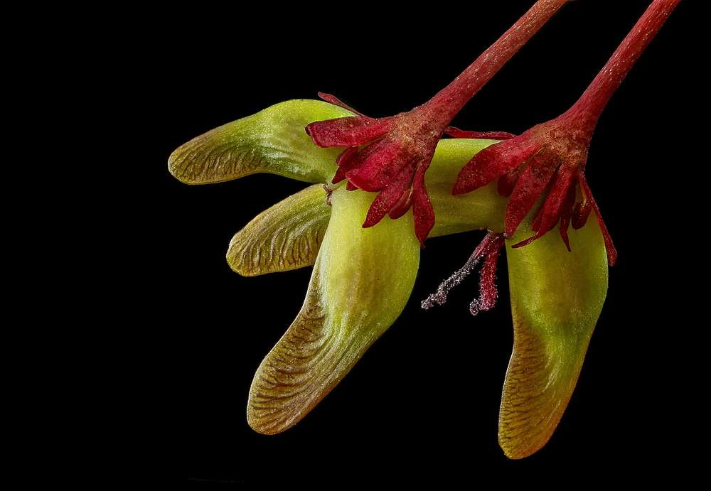
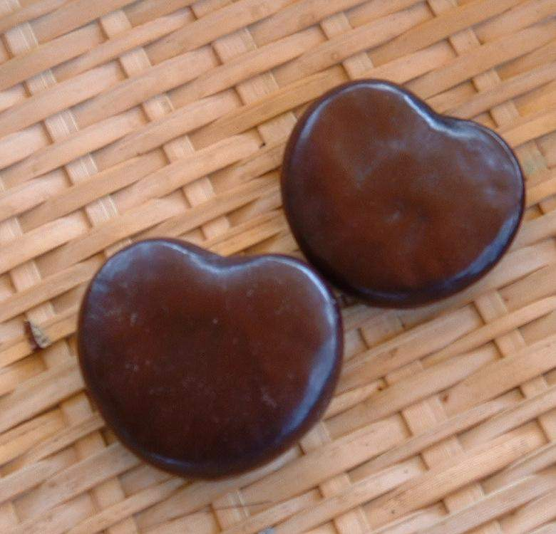
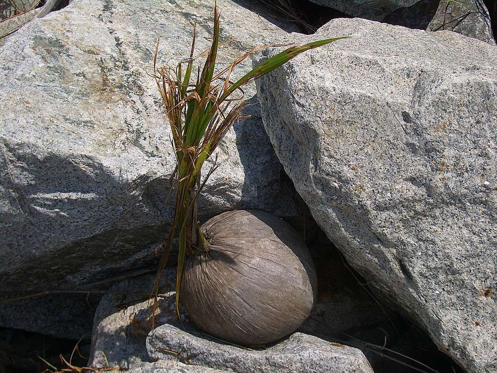
🌍 Part 3Seeds, Spores, and Getting Around
After pollination, many plants form seeds. Seeds need to get away from the parent plant to find space to grow. They travel by wind, water, animals, and even gravity.
Ferns don't make flowers or seeds at all. They release tiny spores from the undersides of their leaves. The spores drift through the air, and some grow into new ferns.
🌷 Inside a flowerRide down a lily, from its petals to its seed room
What to do: First, make a prediction. Then brush the glowing layer: drag across it (or tap it again and again) until the plant shows.
Where in a flower do you think seeds start to grow?
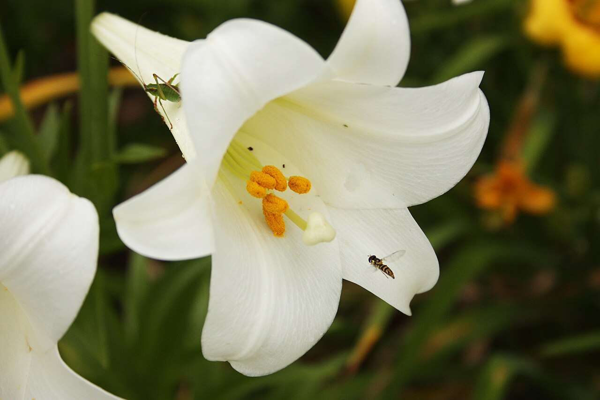
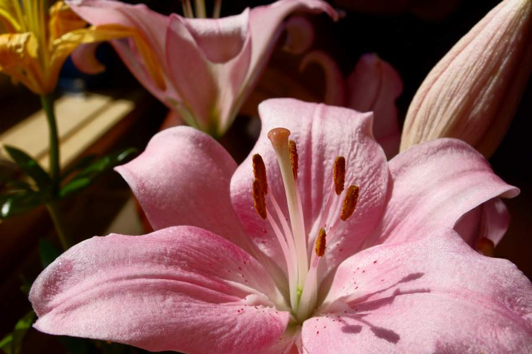
Level 1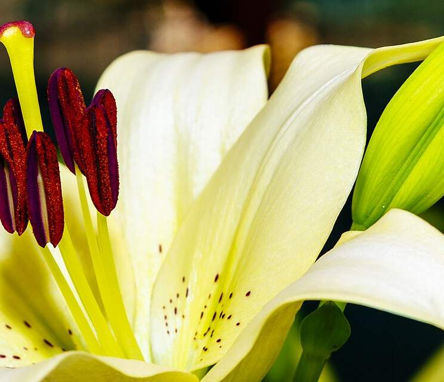
Level 2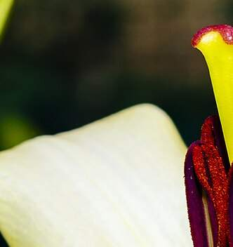
Level 3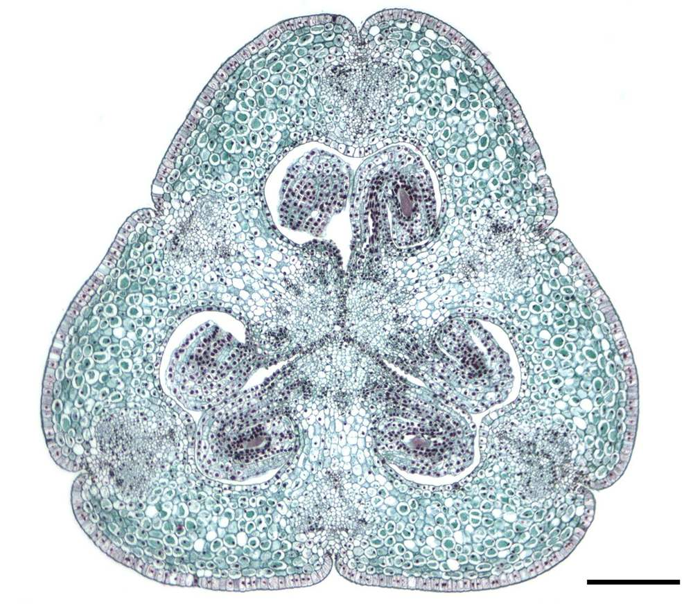
Level 4Every part of a flower helps make seeds. Petals invite pollinators, pollen holders make pollen, the sticky tip catches it, and the seed room grows the seeds.
Does every plant have flowers and a seed room like this lily?
Seeds that sail the sea
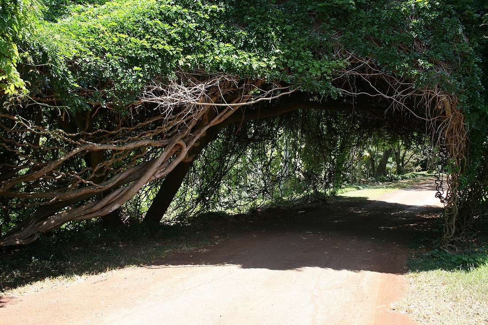
Sea hearts grow on giant vines in tropical forests. Their pods can grow longer than you are tall! Each seed has a hollow space inside, so it floats.
When the seeds fall into rivers, they wash out to sea. Some ride the Gulf Stream for a year or more and land on beaches in Florida, and even Scotland and Norway. Long ago, people in Scotland found them and called them Molucca beans.

🗂️ Part 4How Did It Travel?
What to do: Pick 3 cards, one at a time. Tap a clue you see, then pick what it is. Predict how it traveled, and watch its home appear.
| Plant | What I observe | The clue | How it traveled | My evidence |
|---|
🌍 Rebuild the plant's homeUse your evidence to rebuild the plant's home OPTIONALOpen ▾
What to do: Pick one you solved. Pick the place it points to, then pick the living things that belong there.
Pick one from your chart and explain it.
Start with: "Plant __ has…"
Scene 3Self-Check
What does it mean when a plant reproduces?
After a bee carries pollen from flower to flower, what can happen next?
Which plant uses spores to reproduce instead of seeds?
Scene 4Assignment
🔍 Part ARead the cases
What to do: Read each one. Pick the best answer, or type your answer.
1. Case A: A bee lands on a flower, picks up yellow pollen, then flies to a second flower of the same kind. What is moving?
2. Case B: A maple tree drops a winged seed. It spins like a helicopter as the wind carries it 30 feet away. What is moving?
3. Case C: A fern in a shady corner releases tiny brown dots from the undersides of its fronds. They drift away on the breeze. What is moving?
4. Case D: A bird eats a bright berry, flies two miles away, and drops the seeds in its droppings. A new bush sprouts there. What is moving?
🚀 Part BShort answer
What to do: Answer in complete sentences. Use your science words.
1. How does a pollinator help a plant reproduce? Use the word pollen in your answer.
2. How are seeds and spores alike? How are they different?
✍️ Write and explainHow does that plant reproduce?
What to do: Pick one of the four cases from Part A. Explain how that plant reproduces and what would happen if something went wrong. Use at least one of the science words under the boxes.
Start with: "I think the most important part of this plant's reproduction is…"
Start with: "I know this because in the cases I noticed that…"
Start with: "This makes sense because…"
🎨 Part CDraw and label
What to do: Draw a nature scene that shows two different ways plants make new plants. Add arrows to show what moves.
🎬 Your question from Scene 1Can you answer it now?
What do you still wonder about? Write your question here. Then answer it.
📋 My answersEverything you wrote, in one place
(Your answers show up here as you write.)
How to turn in: Copy your answers and paste them into the Canvas assignment. Or download the file and upload it. Then press Save my drawing in Part C and upload your drawing too.
✅ Checklist
What to do: Tap each item when it is done. Items you finish on the page check themselves.
- My evidence chart has 3 plants and my explanation.
- Part A: all four cases.
- Part B: questions 1 and 2.
- Part C: my drawing and both labels.
- Write and explain, with at least one science word.
🎬 Premiere my new-plants storyYour exhibit
What to do: Check your exhibit. Pick the one you wrote about, add your first name, then press Premiere film.
I observed…
I think it was…
My evidence…
It tells us…
🎞️ This film's frames
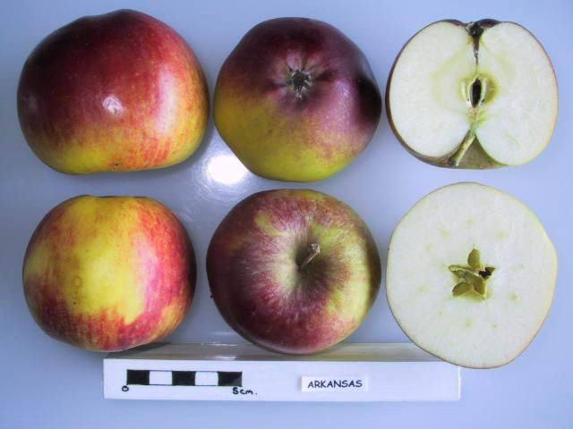
Blossom to apple
The Wind or Water Lab
Inside a flower
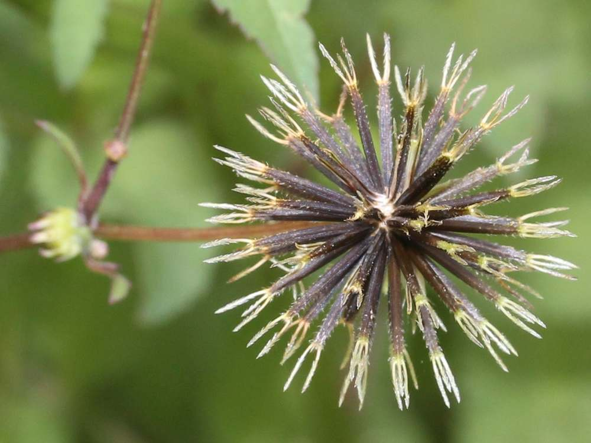
How did it travel?
Earn all four frames in the Lesson, then finish the checklist.
🔜 Coming up next21.02 · Seed vs. Spore Sorting
Next time, sort real plants into the ones that make seeds and the ones that make spores.
Photo and music credits
- Apple Blossom, Barton Upon Humber - geograph.org.uk - 1282894, David Wright, CC BY-SA 2.0
- Honey bee on apple blossom, Sandy, Bedfordshire (7103234043), Orangeaurochs from Sandy, Bedfordshire, United Kingdom, CC BY 2.0
- Young immature Malus domestica Champion apple fruitlets in May, by baby-bear.…, Natalka Ukraine, CC BY 4.0
- Cross section of Arkansas, National Fruit Collection (acc. 1955-093), National Fruit Collection, Brogdale., OGL 2
- Pulau-Melaka-Sprouting-coconut-2251, User:Vmenkov, CC BY-SA 3.0
- Himalayan Balsam seed pods - geograph.org.uk - 551463, Philip Halling, CC BY-SA 2.0
- Himalayan Balsam growing by the Thames Path near Calcutt - geograph.org.uk - …, Rod Allday, CC BY-SA 2.0
- Canaveral National Seashore 2015, Bubba73 (Jud McCranie), CC BY-SA 4.0
- Red maple, seeds 2013-04-11-15.11.33 ZS PMax (8643615043), Sam Droege from Beltsville, USA, Public domain
- Flickr - ronsaunders47 - Washed up coconuts., Ronald Saunders from Warrington, UK, CC BY-SA 2.0
- Crandon Park Modified, Paulkondratuk3194 (talk), CC BY-SA 3.0
- Western Isles, drift seeds - geograph.org.uk - 1745719, Martyn Gorman, CC BY-SA 2.0
- Entada gigas1, unknown, CC BY-SA 3.0
- Sea heart (Entada gigas) seeds, Salil Kumar Mukherjee, CC BY-SA 4.0
- Lilia, pręciki i słupek; fot. 01, Luxetowiec, CC BY-SA 4.0
- Closeup of Stamen and stigma of Lilium 'Stargazer' (the 'Stargazer lily'), Subhrajyoti07, CC BY-SA 4.0
- Lilium ovary, Jon Houseman, CC BY-SA 4.0
- A chart of the Gulf Stream LOC 2004627238, Poupard, James; Franklin, Benjamin, Public domain
- Silver Maple Samaras, USFWSmidwest, Public domain
- HARDWOOD FOREST TREES, INCLUDING RED MAPLE, HANG OVER A FINE TROUT STREAM ON …, Anne LaBastille, Public domain
- Bidens pilosa var. pilosa achene, Alpsdake, CC BY-SA 3.0
- White Beggarticks (Bidens alba) - Sarasota, Florida 2023-01-23 (01), Ryan Hodnett, CC BY-SA 4.0
- FMIB 49245 Gulf Stream - This shows the line where the blue water meets the g…, Alpheus Hyatt Verrill, Public domain
- Young apple trees bearing fruit - geograph.org.uk - 1476095, Stephen Craven, CC BY-SA 2.0
- Entada gigas, Parque Ecológico Jaguaroundi, Veracruz, Mexico 1, martinsv, CC BY-SA 4.0
- Easter Lily with Pollinator, Alabama Extension, CC0
- Dandelion seed head (Taraxacum officinale), Avenue, CC BY-SA 4.0
- Monkey Ladder Vine canopy, Gh5046 at English Wikipedia, Public domain
- A Myrtle Warbler eating Waxmyrtle berries. (6443387661), Andy Morffew from Itchen Abbas, Hampshire, UK, CC BY 2.0
- CNS Apollo Beach path01, Ebyabe, CC BY 2.5
- Music: Felix Mendelssohn, The Hebrides (Fingal's Cave) Overture, Op. 26, Musopen Symphony Orchestra, public domain (Wikimedia Commons).
- Opti the owl: Optima Academy. Sound effects are made by the page. The blossom-to-apple movie, the seed lab and the inside-a-flower ride are models; every plant photo is real, and the four order photos come from different apple trees.